Round 4: a simpler, personal creator site
One complete new direction built on the updated positioning: your name, your photograph, your approved introduction, four plain navigation items and a short homepage. The Universe is gone from this round. Earlier rounds are untouched and linked at the bottom.
Open the prototype See the update demonstration
Pages in the prototype
- Homepage
- Projects
- Videos
- Writing
- About
- Project page: the two AI agents
- Project page: ZeroHuman (title card, receipts)
- Project page: Returning Your Things
- Writing page: the AI editor essay
- Writing page: 4 tips for AI videos
All 26 pages are built: every project that has a page on the live site (12) and all nine essays.
The picture transition
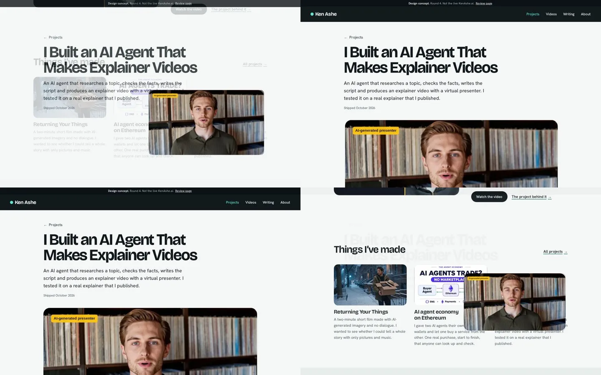
Screenshots
Homepage
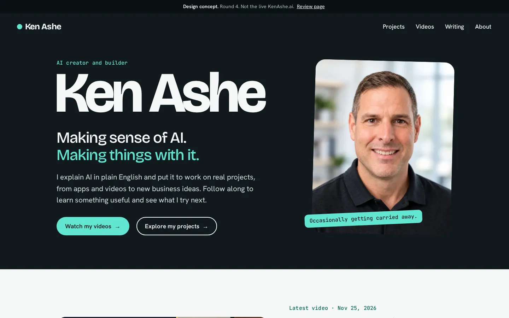

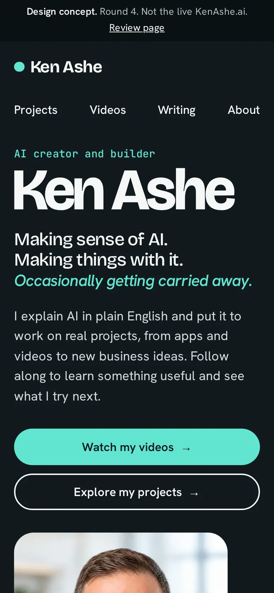

Projects
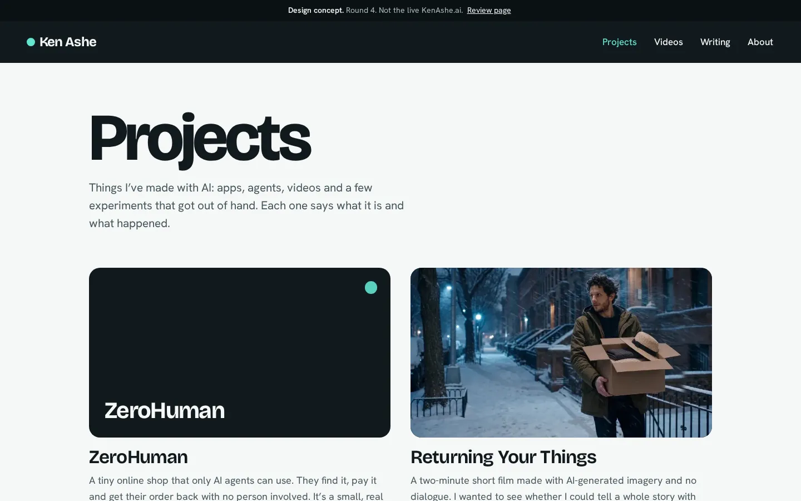

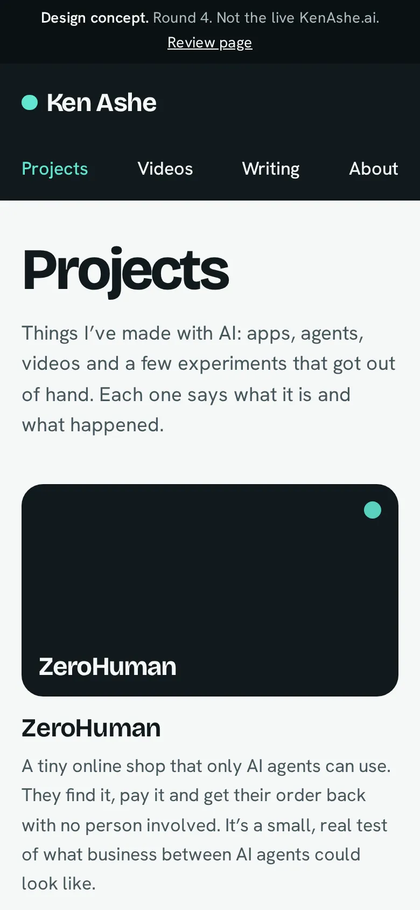

Videos
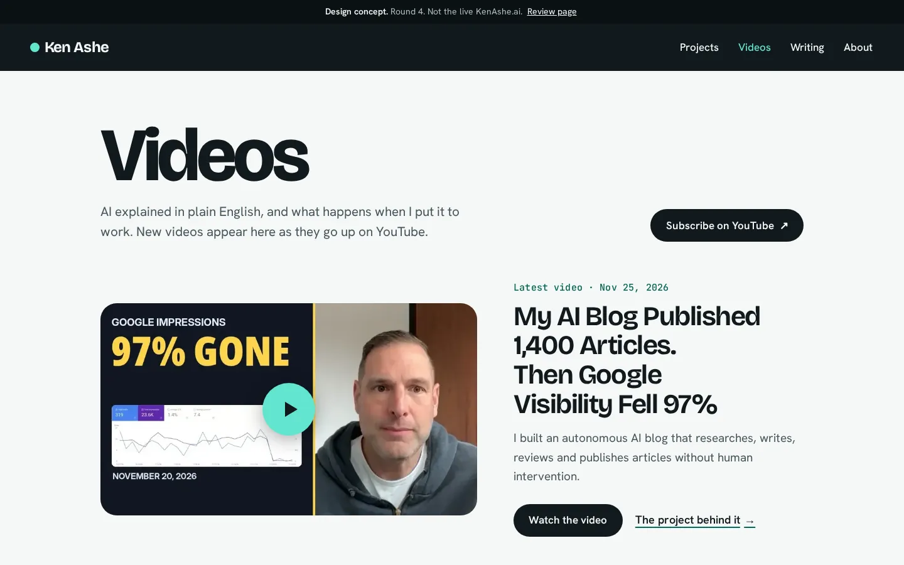

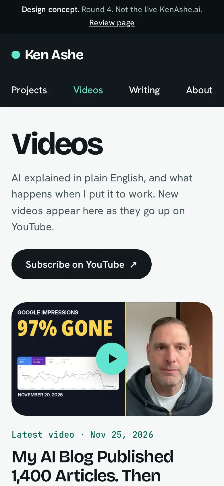

Writing
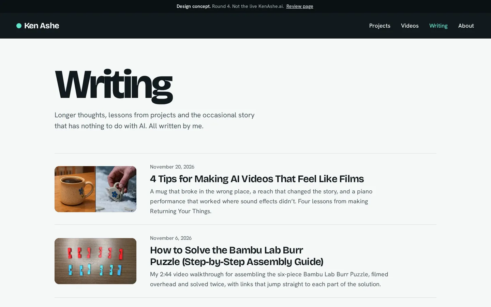

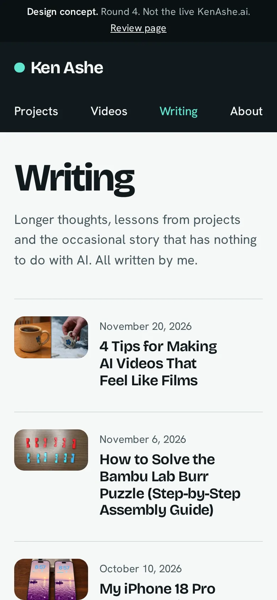

About
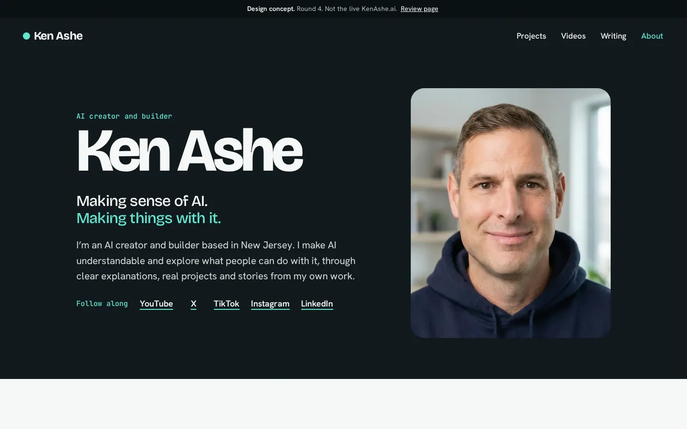

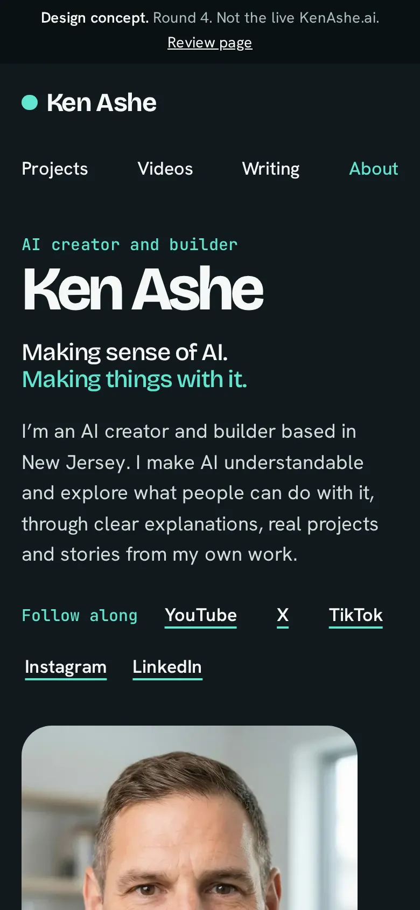

Project page: the two AI agents

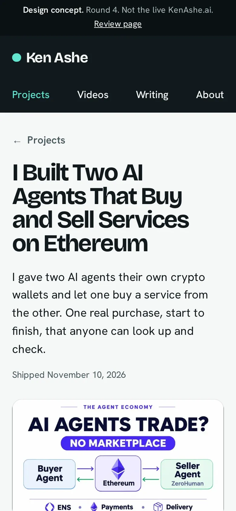

Writing page: the AI editor essay
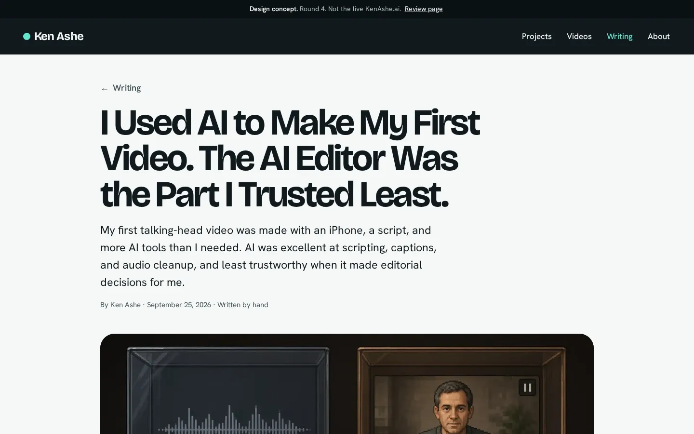

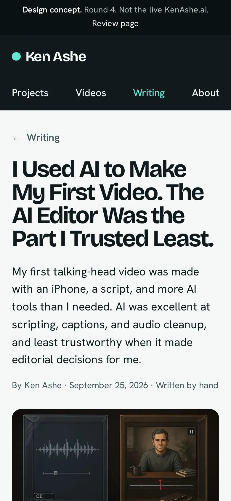

Firefox
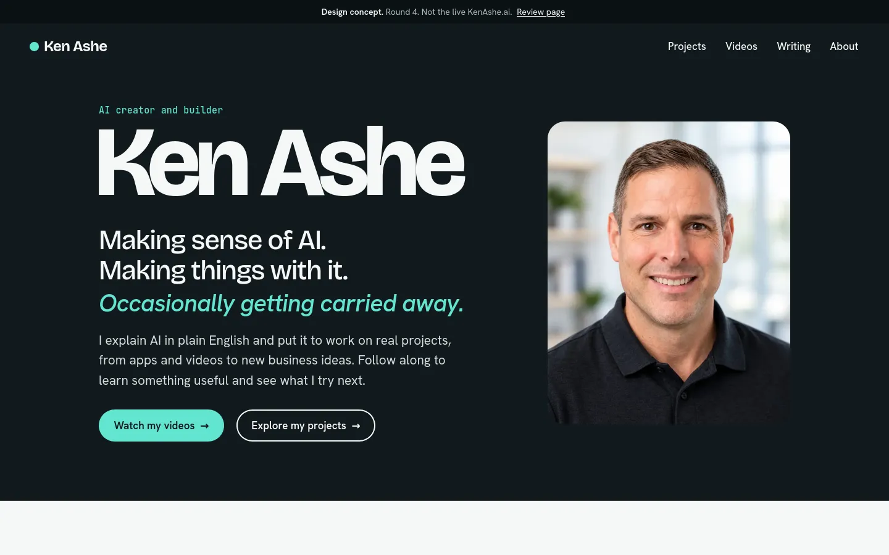
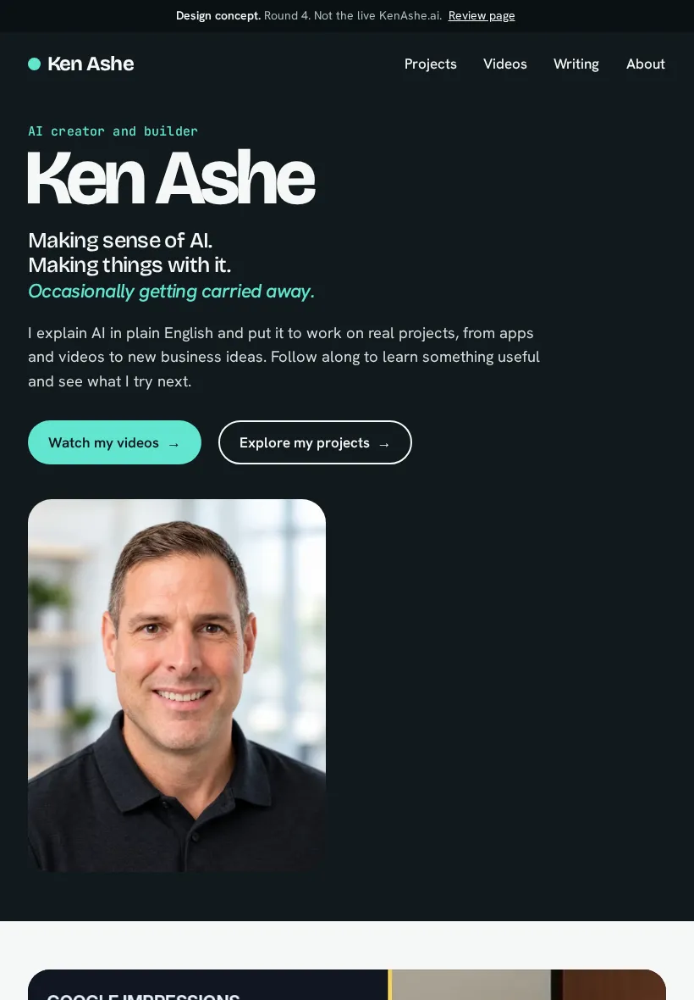
A new direction for KenAshe.ai, built as a working prototype in round-4/. It is a design concept: it is not the live site, production was only read, and Rounds 1 to 3 are unchanged in the same repository.
The design in brief
- Your name is the identity. "Ken Ashe" is set very large in real text, with your photograph beside it, the approved headline and introduction word for word, and the two actions: Watch my videos goes to the video archive, Explore my projects goes to the project index.
- One personality detail. "Occasionally getting carried away." appears once, as a small tilted note on your photograph. It is not repeated anywhere else.
- Four navigation items, each a plain link: Projects, Videos, Writing, About. Your name goes home.
- A short homepage in five parts: introduction, one featured piece, three projects, a few things to watch and read, a short personal note with follow links. Nothing appears twice, and the same subject is not shown in two forms (a project and its own video, for example).
- Colour from your YouTube banner: deep graphite for the introduction, the personal note and the footer; soft white for everything you read; mint as the one accent. On light surfaces the mint is darkened to a teal so text links stay readable.
- Type: Bricolage Grotesque for your name and headings, Hanken Grotesk for reading, JetBrains Mono for a few small labels. All three are already fonts the live site ships.
- No Universe, no status panels, no counters, no decorative controls. Technical evidence lives on the project pages, in a section called "Explore further" at the end.
- The Digest is out of the navigation and off the homepage. The footer links to its archive and says "Automated articles. Publishing is paused." That sentence is read from the pipeline's real state, not typed in.
The one distinctive interaction
When someone opens a project or an essay, its picture travels from the card into the opening of the page, and travels back when they return. It works from the homepage, the indexes, "next project" links and related items.
- The links are ordinary links. The effect is the browser's own page-to-page transition, switched on by two lines of CSS, so there is nothing to break.
- Keyboard and touch get the same thing, because it is triggered by navigation, not by the mouse.
- With reduced motion switched on, pages change instantly.
- Browsers that do not support it (Firefox today) simply load the page.
- No setup per item. Every picture is named from the item's own record. A new project gets the transition by existing. A project with no picture gets a title card drawn from its title, and that travels too.
What you do to update the site
| Content or action | What I do | What updates automatically | When it updates | Demonstrated or proposed |
|---|---|---|---|---|
| Publish a video | Upload it to YouTube. Nothing on the website. | Video archive (as the latest video); homepage feature, unless you have chosen one; "More to watch"; its thumbnail; a link to the project if the description contains that project's kenashe.ai address | At the next scheduled check (every 30 minutes) plus the normal site build, or straight away with the "Run workflow" button | The sync script is demonstrated: tested, and run for real against your channel feed. The schedule that runs it is proposed and not installed. |
| Add a project | Add one record to the project list (src/data/builds.ts). Add a page file if it deserves a write-up. | Project index; "next project" links; the homepage three, once it has a picture or you choose it; the picture transition | Next site build after you save (a few minutes) | Demonstrated in the prototype. The production wiring is proposed. |
| Write an article | The workflow you use today: a record in src/data/writing.ts and the essay page. | Writing index; homepage "And to read"; "read next" links | Next site build | Demonstrated in the prototype. Your existing workflow is unchanged. |
| Change the homepage feature | Change one line, featured, in the homepage settings file. | The featured piece. The other homepage sections adjust so nothing repeats. | Next site build | Demonstrated. The settings file in production (src/data/home.ts) is proposed. |
| Leave the feature alone | Nothing. | Your newest full-length video is featured. | With each new video | Demonstrated |
| Correct a title or thumbnail | Project or essay: fix it in its record. Video: fix it on YouTube, or add one line under corrections in the settings file. | Every place the item appears | Next site build or sync | Demonstrated (automated test) |
| Hide an item from featured areas | Add its id to hide in the settings file. | It leaves the homepage and featured spots. Its page and its archive entry stay. | Next site build | Demonstrated |
| The Digest | Nothing. It stays paused. | The footer wording follows the pipeline's state. | n/a | Demonstrated. No automation was changed. |
A recorded run of all of this is on the demonstration page (round-4/demo/). It applies each update to a separate copy of the site and lists exactly which pages and sections changed. The example entries exist only there.
One limit to know about: YouTube's feed lists only your latest 15 uploads. A retitled video is picked up automatically while it is still among those 15. For an older video, use corrections.
Three different states, kept apart
- Works in the prototype today: everything on the pages; the picture transition; choosing or hiding featured items; corrections; the video archive of 16 videos (one more than YouTube's feed now lists); the thumbnail fallback; the sync script itself.
- Proposed for production, not built there: the shared records module, the homepage settings file, the new templates, the
/videos/page, and the scheduled workflow file (production-plan/sync-videos.yml). - Installed and running: nothing new. Production is exactly as it was. The Digest's publishing remains paused.
Wording that needs your approval
Your introduction, headline, actions and bio line are used exactly as you wrote them. I wrote the following for the prototype from facts already on your site, and it should not go to production until you have read it. All of it is in one file, content/copy.json, under draft:
- A one or two sentence plain-English summary for each of the 19 projects.
- The short "Hi, I'm Ken." note on the homepage.
- The About page's opening paragraph and a first-person version of your background.
- The two "What you'll find here" descriptions on the About page, and the one-line introductions on the Projects, Videos and Writing pages.
Project and essay page bodies are your own published words, copied from the live site unchanged.
What was checked
All 26 prototype pages, the demonstration pages and this review page were loaded automatically at 320, 390, 820 and 1440 pixels wide in headless Chromium 148, and at 390 and 1440 in headless Firefox 150.
- No horizontal overflow at any width.
- Smallest text anywhere is 14 px; body text is 17 to 20 px. Every text and background pair meets WCAG AA contrast.
- No console errors, no failed requests, no missing images, no dead internal links.
- Every tab stop shows a visible focus ring. Controls are at least 44 px on phones.
- With JavaScript off, every page has all of its content and navigation. Video pictures are plain links to YouTube.
- With every outside service blocked, every page still renders completely. No page contacts any outside service until someone presses play.
- With reduced motion on, nothing animates and page changes are instant.
- Homepage: about 5 desktop screens and 7 phone screens tall; about 450 KB on first load including fonts.
- The transition was confirmed in Chromium by mouse and by keyboard, forwards and back. Firefox navigated normally without it, as designed.
- 14 automated tests pass (
node --test round-4/tools/site.test.mjs): four for the video sync, ten for the site.
Not verified
- Safari and iOS. Safari's engine cannot run in my environment. Safari 18.2 and later support this kind of page transition, but I have not seen it there. Please try it on your iPhone and Mac.
- Real phones and real touch. Touch was emulated.
- Screen readers. Structure, labels and focus order were checked by script; no screen reader was run.
- Actual YouTube playback. The player loads on request and falls back to a YouTube link; I did not confirm a video plays inside the embedded player.
- The scheduled workflow has never run, because it is not installed.
Known limits
- Only 5 of the 19 projects have a picture of their own or a video to borrow one from. The rest use title cards. The design is noticeably stronger with pictures, so the most useful next step for content is one image per project.
- Project and essay bodies keep production's structure, so a few technical pages are long. The plain summary, the picture and the main action come first.
- Links to pages outside the prototype (Digest archive, Newsroom, legal pages, RSS) go to the live site.
- The seven smaller builds have no pages on the live site either, so they are listed without links.
- No structured data is set in the prototype. Production keeps its own.
Before production
See production-plan/MIGRATION.md: five small pull requests, each reversible alone, none touching URLs, canonicals, robots rules, the sitemap filter, redirects, structured data or the Digest pipeline. The first step is a preview build you can try on your own devices.
Decisions I need from you:
- Is this the direction? If yes, which parts to change before going further.
- The draft wording above.
- Whether to update the public identity record ("AI application builder") to the new positioning, everywhere at once.
- Whether Newsroom moves to the footer, as shown.
- Whether to go ahead with the preview build.
Automated checks, page by page
| Page | Result | First load | Screens tall, desktop / phone | Smallest text | Sideways scroll | Errors | JavaScript off | Outside services blocked | Keyboard focus | Firefox |
|---|---|---|---|---|---|---|---|---|---|---|
| site/ | Pass | 451 KB | 5.1 / 7.3 | 14 px | none | 0 | complete | complete | ok | ok |
| site/about/ | Pass | 267 KB | 4.5 / 6.2 | 14 px | none | 0 | complete | complete | ok | ok |
| site/building/ | Pass | 387 KB | 5.4 / 8.7 | 14 px | none | 0 | complete | complete | ok | ok |
| site/building/ai-agent-economy/ | Pass | 288 KB | 11.4 / 15.4 | 14 px | none | 0 | complete | complete | ok | ok |
| site/building/ai-explainer-producer/ | Pass | 324 KB | 12.1 / 14.7 | 14 px | none | 0 | complete | complete | ok | ok |
| site/building/ai-ugc-video-lab/ | Pass | 281 KB | 10.8 / 14.5 | 14 px | none | 0 | complete | complete | ok | ok |
| site/building/ai-werewolf/ | Pass | 243 KB | 8.0 / 11.0 | 14 px | none | 0 | complete | complete | ok | ok |
| site/building/autonomous-ai-blog/ | Pass | 285 KB | 12.1 / 16.9 | 14 px | none | 0 | complete | complete | ok | ok |
| site/building/autonomous-seo-agent/ | Pass | 319 KB | 6.2 / 7.4 | 14 px | none | 0 | complete | complete | ok | ok |
| site/building/rebuilding-the-image-pipeline/ | Pass | 247 KB | 15.7 / 20.1 | 14 px | none | 0 | complete | complete | ok | ok |
| site/building/returning-your-things/ | Pass | 367 KB | 4.1 / 4.7 | 14 px | none | 0 | complete | complete | ok | ok |
| site/building/sir-pitches-a-lot/ | Pass | 240 KB | 7.1 / 9.5 | 14 px | none | 0 | complete | complete | ok | ok |
| site/building/vetstack/ | Pass | 240 KB | 7.1 / 9.0 | 14 px | none | 0 | complete | complete | ok | ok |
| site/building/x-article-toolkit/ | Pass | 246 KB | 10.3 / 14.2 | 14 px | none | 0 | complete | complete | ok | ok |
| site/building/zerohuman/ | Pass | 248 KB | 10.4 / 14.1 | 14 px | none | 0 | complete | complete | ok | ok |
| site/videos/ | Pass | 455 KB | 4.4 / 5.6 | 14 px | none | 0 | complete | complete | ok | ok |
| site/writing/ | Pass | 394 KB | 3.2 / 3.4 | 14 px | none | 0 | complete | complete | ok | ok |
| site/writing/4-tips-for-making-ai-videos-that-feel-like-films/ | Pass | 424 KB | 8.1 / 8.5 | 14 px | none | 0 | complete | complete | ok | ok |
| site/writing/ai-agents-reasoning-from-events-that-never-happened/ | Pass | 389 KB | 15.0 / 19.7 | 14 px | none | 0 | complete | complete | ok | ok |
| site/writing/ai-editor-trusted-least/ | Pass | 271 KB | 10.8 / 12.4 | 14 px | none | 0 | complete | complete | ok | ok |
| site/writing/ashe-family-coat-of-arms/ | Pass | 439 KB | 10.1 / 10.2 | 14 px | none | 0 | complete | complete | ok | ok |
| site/writing/bambu-lab-burr-puzzle-solution/ | Pass | 448 KB | 5.8 / 6.4 | 14 px | none | 0 | complete | complete | ok | ok |
| site/writing/iphone-18-pro-att-activation-failure/ | Pass | 398 KB | 11.8 / 14.5 | 14 px | none | 0 | complete | complete | ok | ok |
| site/writing/my-automated-blog-got-cited/ | Pass | 346 KB | 8.2 / 10.9 | 14 px | none | 0 | complete | complete | ok | ok |
| site/writing/the-digest-is-the-system/ | Pass | 347 KB | 4.3 / 5.6 | 14 px | none | 0 | complete | complete | ok | ok |
| site/writing/you-can-use-ai-to-learn-almost-anything-even-ai/ | Pass | 296 KB | 5.9 / 6.5 | 14 px | none | 0 | complete | complete | ok | ok |
| review page | Pass | 728 KB | 20.2 / 28.1 | 14 px | none | 0 | complete | complete | ok | ok |
| demo/ | Pass | 234 KB | 3.3 / 4.9 | 14 px | none | 0 | complete | complete | ok | ok |
| demo/site/ | Pass | 419 KB | 5.0 / 7.2 | 14 px | none | 0 | complete | complete | ok | ok |
| demo/site/building/example-recipe-card-maker/ | Pass | 236 KB | 3.0 / 3.3 | 14 px | none | 0 | complete | complete | ok | ok |
| demo/site/videos/ | Pass | 446 KB | 4.3 / 5.8 | 14 px | none | 0 | complete | complete | ok | ok |
Measured on the files in this repository, served locally the way GitHub Pages serves them. First load counts text files uncompressed; GitHub Pages and Vercel compress them.
Nothing in this plan has been done. Production (kenashe/kenashe) was read, never changed. Reviewed at commit 8b35b45 (PR #157, merged November 26, 2026).
What production looks like today (re-checked for this round)
- Navigation: Building, Writing, About, Newsroom, Digest. Footer also links Topics, Connect and the legal pages.
- The Digest's scheduled publishing is paused (the
scheduletrigger in.github/workflows/pipeline.ymlis commented out). - Indexing changed since Round 3. Published Digest articles, the
/blog/landing page and the topic hubs are eligible for indexing again. Only tag listings with fewer than three published articles carrynoindexand are left out of the sitemap (src/utils/indexing.ts,src/pages/blog/tags/[tag].astro, the sitemap filter inastro.config.mjs). Round 3's notes said the whole Digest was noindexed; that is no longer true and nothing in this plan depends on it. vercel.jsonholds 1,092 redirects. Structured data comes fromsrc/data/schema.tsandJsonLd.astro.
What this redesign must not touch
| Kept exactly as it is | Why |
|---|---|
Every existing URL, including all /blog/ articles, tags and topic hubs | Nothing is deleted or moved. /building/ keeps its address and is only labelled "Projects". |
src/utils/indexing.ts, tag noindex rules, the sitemap filter, robots.txt.ts | Deprioritising the Digest in the design is not an indexing change. |
Canonical tags and BaseHead.astro | The new templates wrap page content; the head stays. |
vercel.json redirects | No route is renamed, so no redirect is added or removed. |
src/data/schema.ts and the Person identity it publishes | It is the master copy mirrored on Ken's other sites. See "Decisions" below. |
| The Digest pipeline, its paused schedule and its kill switch | Out of scope. It stays paused. |
Page bodies (src/pages/building/.astro, src/pages/writing/) | Only the frame around them changes. Page H1s are kept as written. |
The prototype's own noindex, its missing canonicals and its robots.txt exist only to keep the concept out of search. None of that goes to production.
Phases (each is one pull request that can be reverted alone)
Phase 0 · Preview only. A draft pull request with a Vercel preview build. Nothing merged. Purpose: see the design with production's real image pipeline and check it on Ken's own phone, Safari and Firefox.
Phase 1 · Shared records, invisible. Add src/lib/site.ts (the model() function from round-4/build.mjs, about 70 lines) and src/data/home.ts (featured, homeProjects, hide, corrections). Optionally add three optional fields to a project record in builds.ts: plain (the short plain-English summary), image, and nothing else. No page uses them yet, so visitors see no change. Rollback: revert the PR.
Phase 2 · Videos. Add scripts/sync-videos.mjs, src/data/youtube-archive.json (already holding 16 videos) and the thumbnails, then a new /videos/ page. Ken installs sync-videos.yml himself (agent tokens cannot add workflow files, the same rule the Digest pipeline documents). /videos/ is a new address; it enters the sitemap through the normal Astro sitemap integration. Rollback: set the repository variable VIDEO_SYNC_ENABLED=false (stops the schedule at once) or revert the PR; the page keeps working from the committed archive either way.
Phase 3 · New frame and homepage. New header, footer, fonts (all three are already production dependencies), colours and homepage. NAV in src/consts.ts becomes Projects, Videos, Writing, About. Newsroom and the Digest archive move to the footer, where the Digest is described from the pipeline's actual state. Rollback: revert the PR, or use Vercel's "Instant Rollback" to the previous deployment while deciding.
Phase 4 · Index and detail templates. /building/, /writing/, and the layouts for project and essay pages. The picture transition is two CSS rules plus one shared Picture component that gives each item's picture its name; no client router and no per-page work. Rollback: revert the PR.
Phase 5 · About page and wording. Only after Ken approves the draft copy listed in the handoff.
Rough size: 6 to 9 working days in total, most of it Phases 3 and 4.
What is not migrated
round-4/build.mjs as a build tool (Astro does this job), tools/snapshot-pages.py and content/pages.json (production pages already hold their own bodies), tools/thumbs.py (Astro's image pipeline does it), the concept notice, and the demonstration folder.
Decisions for Ken before Phase 3
- Person identity.
schema.tsstill describes Ken as "AI application builder" with the earlier description, and that record is mirrored on other sites. Updating it to the new positioning is a separate, deliberate change that should be made everywhere at once. This plan leaves it alone until Ken says so. - Whether
/videos/should be indexable from day one. - Sync every 30 minutes or hourly. Both are free on a public repository.
- Whether Newsroom belongs in the footer (as prototyped) or should stay in the main navigation.
- Whether the seven smaller builds without pages should each get a short page later.